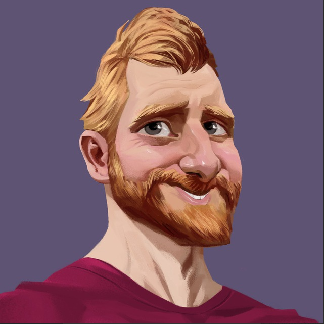
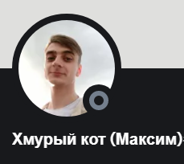
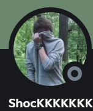

Приключенческая сага об обучении юных верстальщиков! Действия картины разворачиваются по всему миру, начало
обучения датировано 20.01.2022. Впереди учеников ждет долгий и тернистый путь, у каждого из них своя мотивация,
цели.
На своем пути они пройдут плечом к плечу с лучшим наставником магистром Жекой (Фрилансер по
Жизни) , а также с бравыми менторами повидавшими немало трудностей в бою. По окончанию учебы их ждет
славная битва за заказы, рабочие места, но все они с теплотой будут вспоминать курсы и благодарить своих
наставников за полученные знания!
Силы Света
Главный Магистр Жека
За последние 10 лет успешно выполнил более тысячи заказов из разных уголков мира, заработал ТОП-рейтинг в одной из самых крупных фриланс бирж, стал выступать с докладами и вести обучающие курсы.
- Расскажет как начать карьеру IT-специалиста с нуля и достойно зарабатывать.
- Поделится техническими навыками и уроками по HTML-верстке.
- Поможет научиться работать когда хочется, а не когда скажут, проводить больше времени с семьей и друзьями и не пропускать действительно важные события своей жизни.
И совершенно не важно, 15 тебе или 40, ты айтишник или специалист совсем другой профессии, прямо сейчас подпишись на канал и помни - Живи, а работай в свободное время! ©
Старшие Менторы
Хмурый Кот (Максим)
Старший Ментор повидавший немало трудностей и отличившийся в боях с заказчиками и трудностями верстки. Был выбран магистром для помощи ученикам в прохождениии курса. Вложил неценимый труд и помощь в создание манускрипта (Чертоги Фрилансера)
ShocKKKKKKK (Сергей)
Второй, но не менее важный старший ментор. Человек помогающий магистру в написании манускрипта (Чертоги Фрилансера). Бравый воин не знающий поражения, строгий но справедливый наставник.